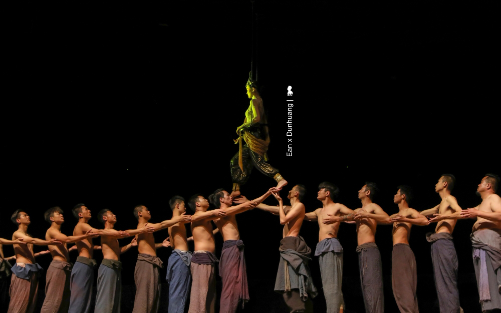

「⼜⾒敦煌」⾼沈浸觀劇新體驗 從歷史⾛進去，從⼈⽣⾛出來
_設計 x ⽣活美學 2019/10/1 _陳耀恩 Ean Chen 在拜⾒莫⾼窟的前⼀晚，我很慶幸先觀賞了⼀部非常受歡迎的室內情景體驗劇「⼜⾒敦煌」，那不僅讓我隔天造訪千年莫⾼窟時能帶著更多認識，更重要是懷抱著更多疼惜與珍視，當⾯對洞窟裡，那些還在與曾經存在的⼈類瑰寶時。這齣劇⾃ 2016 年 9 ⽉⾸演⾄今已演出逾 2100 場、接待超過 138 萬⼈次，在剛過的旅遊旺季 – 今年 8 ⽉甚⾄還創下單⽇演出 12 場的紀錄，單場 90 分鐘的劇⽬，從早上 8 點演到凌晨 1 點，還有觀眾抱憾買不到票，是⽬前敦煌最具代表性的必看表演之⼀。
總導演王潮歌，數萬觀眾每天在⼤陸多處同時觀賞她的節目
如此火紅倒也不是太令⼈意外，因為要知道該劇的總導演王潮歌，⼤陸最具代表性的多部「印象系列」實景劇就是她的作品，每天同時有 2-3 萬⼈在⾄少 8 處景區欣賞她的演出，繼《印象》與《⼜⾒》系列，她最新《只有》系列的開篇作品「只有峨眉⼭」這個⽉剛進⾏⾸演。
從數百本書取經構思，兩年打造「⼜⾒敦煌」
⽽讓王潮歌覺得幾乎沒有成功可能的「⼜⾒敦煌」ㄧ劇，是她花了約兩年籌備，期間閱讀數百本敦煌相關著作，依據構想、花了 15 個⽉打造有著 28 台升降機與複雜機關的專屬劇場，不光內在可觀、外觀也具巧思，外型以「沙漠中的⼀滴⽔」為意象採⽤玻璃和岩⽯覆蓋，藉由⽩天的⽇光和夜晚燈光的照射，不同時間下會讓⼈⾒到不同形狀的⽔滴。
⾛動式觀劇新體驗
「這是你從來沒有過的看劇體驗」晚餐後前往湖藍劇場的巴⼠上，我們的專業導遊莎莎說她每看⼀次哭⼀次，透過她的描述，「先要站著看」、「需走動」、「演員離你很近」等幾個關鍵字，我⼤概可以猜到在⼤陸開表演形式先河的「⼜⾒敦煌」可能是怎麼⼀回事。果不其然，在觀劇過程中，蠻多表演⼿法與呈現⽅式，讓我想到了這兩年讓我印象最深刻的三齣劇，那有著台灣雲⾨《流浪者之歌》的禪意境、《極限震撼+ FUERZA BRUTA》的多⾯舞台、互動式表演與聲光效果，還有紐約《Sleep No More》與演員零距離的⾼浸入感觀劇體驗，整體來說的確頗為創新與成功，若有美中不⾜，可能就是在觀眾不⾃覺被分成 16 組、進入不同洞窟場景的表演場域時，因怕混亂⽽多了些規範與宣導⽽讓觀眾容易出戲，不像《Sleep No More》來得⾃然與擁有那麼⾼的沈浸感。
不重現歷史，引導觀眾以⾃⼰觀點看待歷史
聽起來可能有點複雜，其實現場觀看⾺上就能進入狀況，特別是王潮歌的劇，當⾳樂⼀下，⾺上就讓觀眾進入到設定的情緒中。整齣劇以六個線索⼈物為脈絡、分別在五個場景講述橫跨千年的故事。帶著觀眾穿越時空⼀會兒是百年前、⼀下⼜回到千年前，從今⽣開始，⼀世世的回溯關於敦煌的過去，我⽤略帶戲謔的誇張形容，若敦煌是⼀個⼈，⼤概觀眾就是走動式的觀落陰。但有意思的是，王潮歌並沒有要重現敦煌悠遠的歷史，⽽是讓觀眾走進歷史，藉由劇中⼈物對話來引導著觀眾思考，以千年為刻度、宏觀的重新審視每個歷史上的單⼀事件。例如百年前，將莫⾼窟許多寶⾙賣給老外的道⼠王圓籙，當時那個決定莫⾼窟命運的舉措，到底是對是錯？沒有標準答案，就看怎麼看。
「⼜⾒敦煌」演的是歷史，更是⼈⽣
當戲接近尾聲，王潮歌藉由劇中⼈物丟了個問題「⼀千年有多長？」劇裡的詩⼈回答：「不過⼀瞬間。春⼀去，冬⼀來，⼀千年就過去啦。」可不是…所有、所有的⼀切，其實都是⼀瞬間⽽已，但，有時⼀念之間的⼼魔，卻會⼜把⼈永⽣的禁錮。這齣戲演的不光是歷史，更是⼈⽣。
離開劇場，黃綺珊主唱的主題曲「⼀瞬間」，仍迴盪不去，不光觀賞入戲，下了戲，還有很強的後勁！
表演時間：晚上 8 點到 9 點半
湖藍劇場位置：敦煌市區向東約 9 公⾥處 (314 省道南側) 莫⾼窟數字展覽中⼼⻄側
⾨票價格：
• 淡季 (當年開始演出到 6/30、10/8 到當年演出結束)
普通票： 298 ⼈民幣、⾄尊席：588 ⼈民幣
• 旺季 (7/1 – 10/7)
普通票： 368 ⼈民幣、⾄尊席：688 ⼈民幣
有內涵的東西，是需要經過長時間的累積，再經由導演或設計師等，透過理解並爬梳出其中的溝通元素，精簡再精簡。對一個參與者來說，這是一個痛苦的過程，也是真正體驗了千年一瞬間！
舞台劇跟電影一樣，需要許多不同的美學涵養在裡面，從舞台設計、場景設計、服裝設計到燈光設計等，不同的工作有不同專業，能夠整合在一起已經非常了不起了，同時還能兼顧創新：移動式的體驗，真的不得不讓人讚嘆啊！